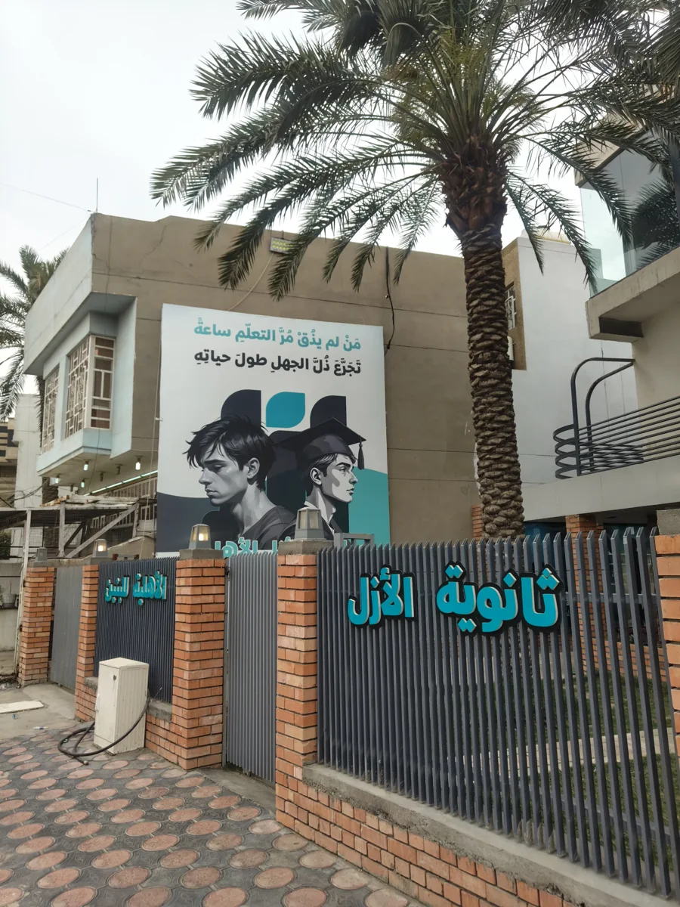
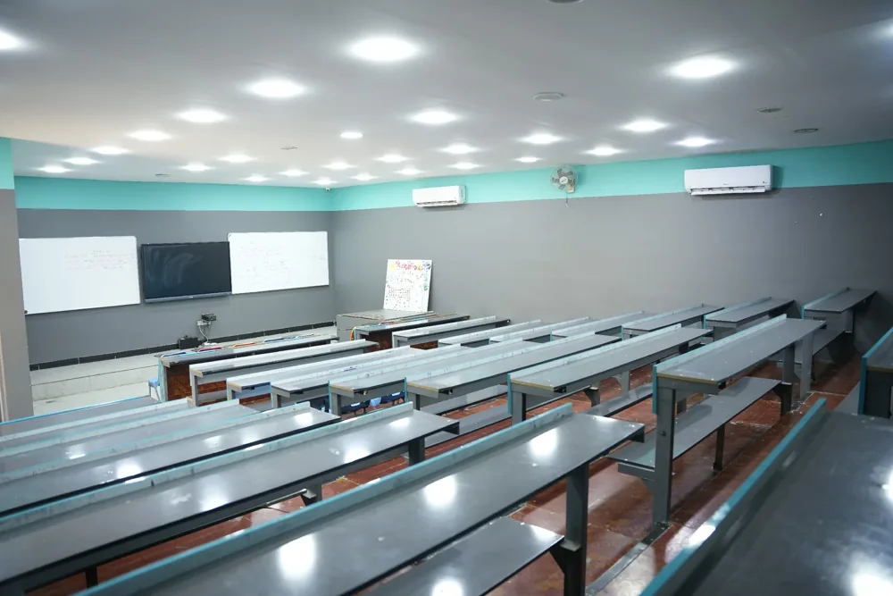
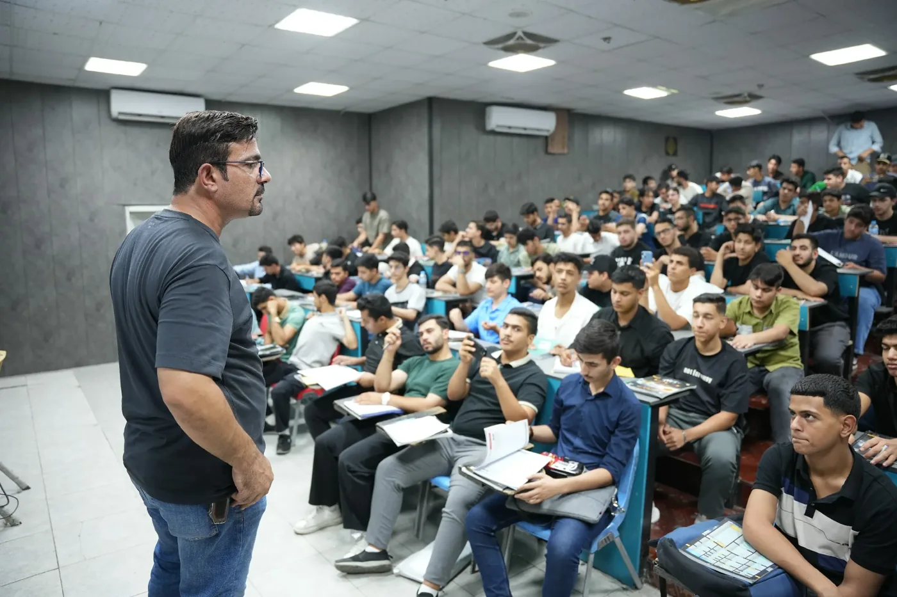

الكاظمية / ٢٠١٠
من كتاب،بدأت الحكاية.
مكتبة ودار نشر. ومنها بدأت علاقتنا بالطالب.
صورة رفوف الكتب والملازم في مكتبة الأزل اليومأول صفحة في الحكاية
BAGHDAD / 2010
مجموعة الأزل التعليمية · بغداد، منذ ٢٠١٠
بدأت بكتاب في الكاظمية. واليوم، نرافق الطالب من صفحات المكتبة إلى القاعة والمدرسة والمنصة.
اتبع النقطةواكتشف حكاية الأزلالكاظمية / ٢٠١٠
مكتبة ودار نشر. ومنها بدأت علاقتنا بالطالب.
معهد الأزل الأهلي / ٢٠١٢
مكان للفهم، ومساحة للسؤال، ومتابعة تقرّب الطالب من هدفه.
مدارس الأزل / ٢٠٢٠ و٢٠٢٤
ثانوية للبنات، ثم للبنين. والأزل ترافق اليوم الدراسي كله.

منصة الأزل / ٢٠٢٦
تجربة الأزل تصل إلى طالب السادس الإعدادي عبر الشاشة.
الأزل اليوم
من أول كتاب إلى الخطوة القادمة. خيار الطالب والأهل.
خيار الطالب والأهل
ما الذي يبقى، مهما كبرنا؟
شرح ومراجعة وحوار. لأن الفهم يبدأ حين يجد الطالب من يسمعه.
متابعة يومية وامتحانات منتظمة، مع الأهل كشريك في الرحلة.
على الورق، في القاعة، أو عبر الشاشة. يتغيّر المكان ويستمر الاهتمام.
عالم الأزل / اختر خطوتك
في القاعة، في المدرسة، أو من البيت.
تجد الأزل حيث تبدأ خطوتك
التالية.
فهمٌ أعمق للمادة، متابعة يومية، ووقتٌ لكل سؤال. بيئة تعلّم تساند الطالب في المراحل الدراسية والوزارية.
الكاظمية · مجمع الزهراء · الطابق الثالثتواصل مع المعهدثانويتان للبنات والبنين. يوم دراسي منظم، واهتمام بالتعلّم وبالطالب الذي وراء كل نتيجة.
البنات منذ ٢٠٢٠ · البنين منذ ٢٠٢٤خبرة الأزل أقرب إليك، عبر محتوى رقمي للسادس الإعدادي، مع كادر متخصص في التعليم عن بُعد.
تعلّم من مكانك، وراجع بوقتكتعرّف على المنصةكتب، ملازم، قرطاسية، وطباعة. كل ما يرافق يومك الدراسي، من المكان الذي بدأت منه حكايتنا.
الكاظمية · مجمع الزهراء · الطابق الأولتواصل مع المكتبة
بغداد / الكاظمية

الأزل، في يومها العادي.
قبل خطوتك الأولى
هذه إجابات مختصرة، والتفاصيل عند فريق كل مؤسسة.
مكتبة ودار للطباعة والنشر، ومعهد الأزل الأهلي، وثانويتان للبنات والبنين، ومنصة الأزل التعليمية. بدأت المسيرة في الكاظمية عام ٢٠١٠.
تواصل مباشرة مع المعهد عبر واتساب، أو افتح استمارة التسجيل.
نعم. تأسست ثانوية البنات في ٢٠٢٠، وثانوية البنين في ٢٠٢٤. لكل منهما رقم تواصل مباشر في قسم عالم الأزل.
تقدّم منصة الأزل محتوى رقمياً لطلبة السادس الإعدادي، مع كادر متخصص في التعليم عن بُعد.
تواصل مع المؤسسة التي تناسبك من قسم عالم الأزل، للحصول على الأجور والمواعيد وتفاصيل التسجيل الحالية من فريقها مباشرة.
لكل سؤال، أهله.
اختَر مكانك في الأزل.
كل الأرقام والحسابات، هنا.
الكاظمية · ساحة عبدالمحسن الكاظمي · فرع مستشفى الضرغام
دليل الوصول إلى ثانوية البنات ←الكاظمية · شارع أكد · قرب متنزه ١٤ تموز · يسار عيادة حرير عند مواجهتها
دليل الوصول إلى ثانوية البنين ←الأزل، من مكانك.
الكاظمية · مجمع الزهراء · الطابق الأول
للطباعة والنشر وتفاصيل الطلبات